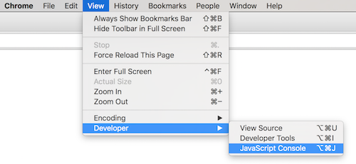
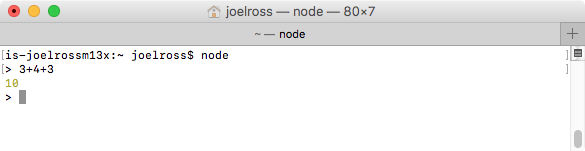
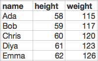

Chapter 10 Fondamenti di JavaScript
HTML e CSS sono markup languages, usate per annotare i siti web per descriverne significato e aspetto. Ma non sono linguaggi di programmazione “completi” (cioe’ Turing Complete)—non hanno variables, control structures o altre feature richieste per far eseguire un algorithm al computer. Quindi, per creare siti web interattivi o web application complesse, serve un linguaggio di programmazione completo. E il linguaggio usato dai browser e’ JavaScript. Questo capitolo introduce i fondamenti del linguaggio JavaScript per il web development, concentrandosi su variables, data types e control structures di base. Le functions sono introdotte qui, ma trattate piu’ in dettaglio nel capitolo successivo.
Nota: questo corso assume che tu abbia gia’ familiarita’ con la programmazione introduttiva in un linguaggio imperativo come Java. Si concentra su come JavaScript differisce da linguaggi come Java, piuttosto che sui concetti fondamentali di programmazione. Se ti serve un ripasso su questi argomenti, puoi consultare un tutorial di programmazione di base o rivedere gli appunti di un corso precedente.
10.1 Programmare con JavaScript
JavaScript e’ un high-level, general-purpose programming language, che ti permette di dichiarare istruzioni per il computer in modo quasi leggibile per gli esseri umani (simile a Java). JavaScript e’ un linguaggio imperative, quindi scrivi algorithms come istruzioni passo-passo (righe di codice) usando la sintassi di JavaScript, e il computer interpreta queste istruzioni in ordine per eseguire l’algorithm. I browser sono in grado di scaricare script scritti in JavaScript, eseguendoli riga per riga e usando quelle istruzioni per manipolare quale contenuto viene mostrato.
Infatti, JavaScript e’ un interpreted language, nel senso che il computer (in particolare un JavaScript Interpreter) traduce il linguaggio di alto livello in linguaggio macchina on the fly at runtime. L’interpreter legge ed esegue una riga di codice alla volta, eseguendo quella riga prima ancora di considerare la successiva. Questo e’ in contrasto con i compiled languages come C o Java, in cui il computer fa la traduzione in un solo passaggio (a compile-time) e poi esegue il programma solo dopo che tutto e’ stato convertito in linguaggio macchina.
Questa traduzione on-the-fly significa che i interpreted languages come JavaScript sono di solito piu’ lenti dei compiled languages, ma non abbastanza da farcelo notare (i browser includono interpreters altamente ottimizzati). Il problema maggiore e’ che senza lo step di compile, gli errori del programma appaiono a runtime invece che a compile time, rendendoli piu’ difficili da individuare e correggere. Per questo, i developer JavaScript fanno largo uso di strumenti di linting (che segnalano problemi comuni che possono portare a errori a runtime), oltre a sistemi di automated testing per testare una varieta’ di input.
Molti editor JavaScript fanno questo tipo di error checking—per esempio, VS Code fornisce il controllo degli errori di sintassi out of the box, con linting piu’ dettagliato disponibile tramite estensioni. Vedi questo articolo per altre feature che supportano la programmazione in JavaScript, incluse IntelliSense e il type checking.
Anche se JavaScript e’ stato progettato per ed e’ usato piu’ comunemente nei web browser (che contengono i loro JavaScript Interpreters), puo’ anche essere eseguito da command line usando Node.js, permettendo a JavaScript di essere un linguaggio pienamente general-purpose. Entrambe le tecniche sono descritte in questo capitolo.
Storia e versioni
Il linguaggio JavaScript e’ stato sviluppato da Brendan Eich (co-founder di Mozilla) nel 1995 mentre lavorava per Netscape. Il prototipo originale del linguaggio fu creato in 10 giorni… un fatto che puo’ aiutare a spiegare alcune delle stranezze del linguaggio.
Nonostante i nomi, JavaScript e il linguaggio Java non hanno nulla a che vedere l’uno con l’altro (e sono in effetti linguaggi di programmazione completamente separati usati in contesti molto diversi). JavaScript fu chiamato cosi’ per sfruttare la popolarita’ di Java in chiave marketing. E’ l’equivalente, in programmazione, del film Transmorphers.
Il linguaggio JavaScript e’ ufficialmente un’implementazione della specifica ECMAScript (cosi’ chiamata dalla European Computer Manufacturers Association). Per questo le versioni di JavaScript sono etichettate con il prefisso “ES”. Per esempio, questo capitolo descrive la sintassi
ES5(JavaScript 5).
Come HTML e CSS, il linguaggio JavaScript continua a essere sviluppato e raffinato con nuove versioni. Ogni nuova versione di JavaScript include nuovi syntax shortcuts, specialized keywords e core functions aggiuntive, ma per il resto e’ compatibile con il codice precedente. Il limite principale nell’usare nuove feature JavaScript e’ se gli interpreters presenti nei browser le supportano.
Questo corso usa principalmente sintassi e feature di ES5, introdotto nel 2009 e oggi supportato da tutti i browser moderni (ad es. IE 10 o successivo). I capitoli successivi descriveranno feature di ES6 (chiamato anche ES2015), introdotto nel 2015 e funzionante su molti browser (ad es. Microsoft Edge ma non IE 11). ES7 e’ stato finalizzato nel 2016 ma non e’ ancora supportato in modo affidabile.
- Nota che Microsoft non supporta piu’ le versioni precedenti di IE, ma una piccola percentuale di desktop usa ancora Windows XP con IE 8. Se devi supportare questi browser, puoi spesso usare un “transpiler” come Babel per tradurre codice JavaScript moderno in una versione piu’ vecchia.
10.2 Eseguire JavaScript
Ci sono due modi principali per eseguire codice scritto in JavaScript:
Nel Browser
Gli script JavaScript sono eseguiti piu’ comunemente in un web browser come parte del rendering di una web page. Poiche’ i browser renderizzano contenuto HTML (in file .html), gli script JavaScript sono inclusi in quell’HTML usando un tag <script> e specificando il relative path a un file che contiene il codice (di solito un file .js) da eseguire. Quando il browser renderizza l’HTML (leggendolo dall’alto verso il basso) e arriva a quel tag, scarica ed esegue il file di script specificato usando il JavaScript interpreter:
<!-- execute the script.js file -->
<script src="path/to/my/script.js"></script>- Nota che l’elemento
<script>non e’ empty! E’ possibile includere codice JavaScript direttamente dentro il tag, ma e’ considerata una bad practice (keep concerns separated!) e dovrebbe essere usata solo per test veloci.
Il tag <script> puo’ essere incluso ovunque in una pagina HTML. Piu’ comunemente viene messo nel <head> per far eseguire lo script prima che il contenuto della pagina venga caricato, oppure alla fine del <body> per far eseguire lo script dopo il caricamento del contenuto (e quindi permettere a JavaScript di interagire subito con gli elementi HTML gia’ caricati). Noi (all’inizio) metteremo piu’ spesso i tag <script> alla fine del <body>:
<!DOCTYPE html>
<html>
<head>
<!-- include here to run before the page appears -->
<script src="js/script.js"></script>
</head>
<body>
... content ...
<!-- include here to run "after" html appears -->
<!-- we will usually do this -->
<script src="js/script.js"></script>
</body>
<html>- La maggior parte dei browser supporta anche l’attribute
defersull’elemento<script>, che dice al browser di rimandare il download e l’esecuzione dello script finche’ la pagina non e’ completamente caricata e renderizzata a schermo. Con questo attribute, puoi mettere l’elemento<script>nel<head>senza problemi. Tuttavia, questo attribute non e’ supportato in IE 9 o precedenti; quindi e’ ancora best practice mettere l’elemento<script>alla fine del body.
Mentre JavaScript e’ usato piu’ comunemente per manipolare il contenuto della web page ed e’ quindi abbastanza evidente per l’utente, puo’ anche produrre output “tipo terminale”—inclusi testo stampato e error messages. Questo output puo’ essere visualizzato tramite la JavaScript Console inclusa come developer tool nel browser Chrome (altri browser includono strumenti simili):

Importante: dovresti sempre avere la JavaScript Console aperta quando sviluppi codice JavaScript, perche’ e’ qui che compariranno gli error messages!
Da Command-line con Node.js
E’ anche possibile eseguire codice JavaScript dalla command line usando Node.js. Node e’ un command line runtime environment—cioe’ un JavaScript interpreter che puo’ essere eseguito da command line.
Con Node installato sulla tua macchina, puoi usare il comando terminale node per avviare una interactive Node session. Questo ti permette di digitare codice JavaScript direttamente nel terminale, e il computer interpretera’ ed eseguira’ ogni riga di codice:

Puoi inserire una riga di codice alla volta al prompt (>). Questo e’ un buon modo per sperimentare il linguaggio JavaScript o per eseguire e testare rapidamente del codice.
Puoi uscire da questa sessione digitando il comando
quit(), oppure premendoctrl-z(seguito da Enter su Windows).Nota che la JavaScript console nei Chrome Developer tools offre la stessa funzionalita’ interattiva.
E’ anche possibile eseguire interi script (file .js) dalla command line usando il comando Node e specificando il file di script che vuoi eseguire:
node my-script.jsQuesto ti permette di creare interi programmi in JavaScript (ad es. scrivendo il codice con VS Code) e poi eseguirli dalla command line. Questo processo e’ piu’ comune quando fai web development server-side (ad esempio implementando un web server con Node), ma lo useremo comunque per pratica e test.
10.3 Scrivere Script
A differenza di Java o C, JavaScript non ha un metodo main() che “avvia” il programma.
Invece, uno script JavaScript (un file .js) contiene una sequenza di statements (istruzioni) che l’interpreter esegue in ordine, una alla volta, dall’alto verso il basso—come se le avessi digitate una dopo l’altra in una sessione interattiva. Ogni riga puo’ dichiarare una variable o una function, che saranno poi disponibili allo statement successivo per uso o chiamata. Quindi, con un programma JavaScript, dovresti pensare alla sequenza di passi che vuoi eseguire e scrivere le righe di codice in quell’ordine.
- In un certo senso, puoi pensare all’intero file come al “body” di un metodo
main()… con la differenza che questo body conterra’ ulteriori function declarations.
Per esempio:
/* script.js */
/* Questo e' il contenuto COMPLETO del file! */
console.log("Ciao mondo!"); //questo viene eseguito per primo
console.log("Sto facendo JavaScript!"); //questo viene eseguito per secondoIl codice di esempio sopra mostra la function console.log(), che e’ l’equivalente JavaScript di System.out.println() in Java—l’output verra’ mostrato nella JavaScript console (nei Developer Tools). Per questo in JavaScript si parla di “logging out” dei valori, invece di “printing” dei valori come in Java.
- La function
console.log()e’ tecnicamente un metodolog()chiamato su un oggettoconsoleglobal. I globals e gli objects saranno discussi in dettaglio piu’ avanti.
Come in Java, ogni statement dovrebbe terminare con un punto e virgola (;) che marca la fine di quello statement. Ma a differenza di Java, JavaScript puo’ essere indulgente se dimentichi un punto e virgola. Il JavaScript interpreter cerca di essere “helpful” e spesso assume che uno statement finisca alla fine di una riga se la riga successiva “sembra” un nuovo statement. Tuttavia, a volte sbaglia in modo disastroso—e quindi la best practice come developer e’ includere sempre i punti e virgola.
Strict Mode
ES5 include la possibilita’ di interpretare JavaScript in strict mode. Lo strict mode e’ piu’ “rigido” nel modo in cui l’interpreter comprende la sintassi: e’ meno propenso ad assumere che certi errori del programmatore siano intenzionali (e quindi a tentare comunque di eseguire il codice). Per esempio, in strict mode l’interpreter produrra’ un Error se provi a usare una variable che non e’ stata ancora definita, mentre senza strict mode il codice userebbe semplicemente il valore undefined. Quindi lavorare in strict mode aiuta a intercettare molti errori banali.
Dichiari che uno script o una function debba essere eseguita in strict mode mettendo una interpreter declaration in cima:
'use strict';- Questa non e’ una String (neppure codice JavaScript!), ma una declaration all’interpreter su come deve comportarsi.
USA SEMPRE LO STRICT MODE! Ti aiutera’ a evitare bug dovuti a typo e a far girare il codice in modo piu’ efficiente.
10.4 Variabili
Le variables in JavaScript sono dynamically typed. Questo significa che le variables non sono dichiarate come un tipo particolare (ad es. int o String), ma assumono il data type (Number, String, ecc.) del value attualmente assegnato a quella variable. Poiche’ non specifichiamo il data type, le variables in JavaScript si dichiarano usando la keyword let:
let message = 'Ciao Mondo'; //una String
console.log(typeof message); //=> `string`
let shoeSize = 7; //un Number
console.log(typeof shoeSize); //=> 'number'L’operator
typeofrestituisce il data type di una variable. Non e’ molto usato al di fuori del debugging.Come in Java, le variables JavaScript dovrebbero avere nomi descrittivi usando camelCase.
Pro Tip: anche se le variables in JavaScript sono loosely typed, il data type di un value e’ comunque importante! Per aiutarti a tenere traccia del type di ogni variable in JavaScript, includi il tipo nel nome della variable. Per esempio: textString, wordsArray, totalNum, itemStr, ecc..
Le variables dichiarate hanno un valore di default undefined—un value che rappresenta che la variable non ha valore. Questo e’ simile a null in Java (anche se JavaScript ha anche un value null che non e’ usato frequentemente):
//crea una variable (non assegnata)
let hoursSlept;
console.log(hoursSlept); //=> undefinedNota che la keyword let e’ in realta’ una nuova sintassi introdotta con ES6: le versioni piu’ vecchie di JavaScript usavano la keyword var (e vedrai var nella maggior parte di esempi e tutorial esistenti). La differenza e’ che le variables dichiarate con let sono “block scoped”, cioe’ disponibili solo all’interno del block ({}) in cui sono definite. Questo e’ lo stesso modo in cui le variables sono scoped in Java. Le variables dichiarate con var, invece, sono “functionally scoped”, quindi disponibili ovunque all’interno della function in cui sono definite. Questo significa che puoi dichiarare una variable dentro un blocco if e quella variable continuerebbe a essere disponibile fuori dal blocco! Quindi let permette codice piu’ pulito, piu’ efficiente e con meno bug.
lete’ l’unica feature diES6supportata da IE 11, il che significa che puo’ essere usata con la maggior parte dei browser attuali. Tuttavia, se devi supportare un browser piu’ vecchio (ad es. IE 10, Safari 9.3, Android 4.4), dovresti transpile il tuo codice o usarevar.
Oltre a let, le variables JavaScript possono anche essere dichiarate usando la keyword const per indicare che sono constant (simile a cio’ che fa la keyword final in Java). Una variable const e’ block scoped, ma puo’ essere assegnata una sola volta:
const ISCHOOL_URL = 'https://ischool.uw.edu'; //dichiara una costante
ISCHOOL_URL = 'https://example.com'; //TypeError: assegnazione a variable costante.Data Types di base
JavaScript supporta molti degli stessi basic data types di Java e altri linguaggi:
Numbers sono usati per rappresentare dati numerici (JavaScript non distingue tra integer e float). I Numbers supportano gli stessi mathematical operators di Java. Le funzioni matematiche comuni sono disponibili tramite il global
Mathbuilt-in (simile alla classMathdi Java).let x = 5; typeof x; //'number' let y = x/4; typeof y; //'number' //i numeri usano la divisione in virgola mobile console.log( x/4 ); //1.25 //usa la function Math.floor() per fare la divisione intera console.log( Math.floor(x/4) ); //1 //altre functions Math comuni sono disponibili console.log( Math.sqrt(x) ); //2.23606797749979Strings possono essere scritte con single quotes (
') o double quotes ("), ma la maggior parte delle style guidelines consiglia le single quotes—basta essere consistenti! Le Strings possono essere concatenate come in Java:let name = 'Joel'; let greeting = 'Ciao, mi chiamo '+name; //concatenazioneLe Strings supportano anche molti methods per lavorarci. Come in Java, le stringhe JavaScript sono immutable, quindi la maggior parte dei string methods restituisce una nuova stringa modificata.
let message = 'Ciao Mondo'; let shouted = message.toUpperCase(); console.log(shouted); //=> 'CIAO MONDO'Booleans (
trueefalse) in JavaScript funzionano allo stesso modo che in Java, possono essere prodotti usando gli stessi relational operators (ad es.<,>=,!=) e supportano gli stessi logical operators (ad es.&&,||e!)://congiunzione (and) boolOne && boolTwo //disgiunzione (or) boolOne || boolTwo //negazione (not) !boolOne //notVedi Type Coercion e Control Structures piu’ sotto per maggiori dettagli su come lavorare con i Booleans in JavaScript.
Array
JavaScript supporta anche gli arrays, che sono ordered, one-dimensional sequences of values. Come in Java, gli Arrays JavaScript si scrivono come literal dentro parentesi quadre []. Gli elementi individuali possono essere accessi tramite index (0-based) usando la bracket notation.
//un array di nomi
let names = ['John', 'Paul', 'George', 'Ringo'];
//un array di numeri (puo' contenere valori "duplicati")
let numbers = [1, 2, 2, 3, 5, 8];
//gli array possono contenere tipi diversi (inclusi altri array!)
let things = ['raindrops', 2.5, true, [3, 4, 3]];
//gli array possono essere vuoti (non contengono elementi)
let empty = [];
//accesso usando la bracket notation
console.log( names[1] ); // "Paul"
console.log( things[3][2] ); // 3
numbers[0] = '340'; //assegna un nuovo value all'indice 0
console.log( numbers ); // [340, 2, 2, 3, 5, 8]Nota che e’ possibile assegnare un valore a qualsiasi index nell’array, anche se quell’index e’ “out of bounds”. Questo fara’ crescere l’array (aumentandone la length) per includere quell’index—gli index intermedi avranno valore undefined. La length dell’array (accessibile tramite l’attribute .length) sara’ sempre l’index dell’elemento “ultimo” + 1, anche se nell’array ci sono meno valori definiti.
let letters = ['a', 'b', 'c'];
console.log(letters.length); // 3
letters[5] = 'f'; //fa crescere l'array
console.log(letters); // [ 'a', 'b', 'c', , , 'f' ]
//gli spazi vuoti sono undefined
console.log(letters.length); // 6Gli arrays supportano anche diversi methods che possono essere usati per modificare facilmente i loro elementi, in modo simile alla class ArrayList in Java:
//Crea un nuovo array
let array = ['i','n','f','o'];
//aggiungi un elemento alla fine dell'array
array.push('340');
console.log(array); //=> ['i','n','f','o','340']
//combina gli elementi in una stringa
let str = array.join('-');
console.log(str); //=> "i-n-f-o-340"
//ottieni l'indice di un elemento (prima occorrenza)
let oIndex = array.indexOf('o'); //=> 3
//rimuovi 1 elemento a partire da oIndex
array.splice(oIndex, 1);
console.log(array); //=> ['i','n','f','340']Object
Il data type piu’ generico e utile in JavaScript e’ l’Object. Un Object e’ simile a un array nel senso che e’ una sequenza (one-dimensional) di values memorizzati in una singola variable. Tuttavia, invece di usare integers come index per ogni elemento, un Object usa Strings. Quindi gli Objects sono sequenze unordered di key-value pairs, dove le keys (chiamate “properties”) sono Strings arbitrarie e i values possono essere di qualsiasi data type—ogni property puo’ essere usata per look up (riferire) il value associato.
E’ molto simile a un dizionario o un’enciclopedia, in cui le parole (keys) servono a cercare le definizioni (values). Anche una rubrica funziona allo stesso modo (i nomi sono le keys, i numeri di telefono i values). Un Object JavaScript fornisce un mapping da properties a values.
Gli Objects JavaScript sono data structures simili a HashMaps in Java, dictionaries in Python, lists in R, o anche una lista descrittiva HTML
<dl>! Piu’ in generale, sono noti come associative arrays (array che “associano” una key e un value). Come con gli altri associative arrays, gli Objects JavaScript sono implementati come hash tables, rendendo l’accesso ai dati molto veloce.
Gli Objects si scrivono come literal dentro parentesi graffe {}. Le property-value pairs si scrivono con i due punti (:) tra nome della property e value, e ogni elemento (coppia) nell’Object e’ separato da una comma (,). Nota che i nomi delle property non devono essere scritti tra virgolette se sono una sola parola (le virgolette sono implicite—le properties sono sempre Strings):
//un object di eta' (Strings esplicite per le keys)
//L'object `ages` ha una property `sarah` (con value 42)
let ages = {'sarah':42, 'amit':35, 'zhang':13};
//properties diverse possono avere gli stessi values
//i nomi di property con caratteri non alfabetici devono essere tra virgolette
let meals = {breakfast:'coffee', lunch: 'coffee', 'afternoon tea': 'coffee'}
//i values possono essere di tipi diversi (inclusi array o altri objects!)
let typeExamples = {number:12, string:'dog', array:[1,2,3]};
//gli objects possono essere vuoti (non contengono properties)
let empty = {}Nota importante: gli Objects sono una collezione unordered di key-value pairs! Poiche’ fai riferimento a un value tramite il property name e non tramite la sua posizione (come fai in un array), l’ordine esatto di quegli elementi non conta—l’interpreter va direttamente al value associato alla property. Quasi di conseguenza, quando fai il log di un Object, l’ordine in cui le properties sono stampate potrebbe non corrispondere all’ordine con cui le hai specificate nel literal.
Se fai
console.log()di un object, di solito vedrai una versione ben formattata di quell’object. Tuttavia, se provi a convertire quell’object in string (ad es. via concatenazione:let output = "my object: "+myObject), otterrai invece la “string version” di quell’object:[object Object]. Questo non e’ un array, ma la string version di un object (simile all’hash che ottieni quando provi a stampare direttamente un array Java). Puoi invece sfruttare il fatto checonsole.logaccetta multiple parameters per stampare un object con una stringa iniziale:let myObject = {a:1, b:2} //converte l'object in stringa, non logga bene console.log("Il mio object: " + myObject); //=> Il mio object: [object Object] //logga l'object direttamente console.log("Il mio object ", myObject); //=> Il mio object {a: 1, b: 2}
Nonostante il nome, gli Objects JavaScript non hanno nulla a che fare con l’Object-Oriented Programming. Tuttavia, possono essere usati per rappresentare “things” nello stesso modo di un object Java, con ogni property che agisce come un “attribute” (instance variable):
//un object che rappresenta una Person (spaziatura per leggibilita'; i white-space sono ignorati)
let person = {
firstName: 'Alice',
lastName: 'Smith',
age: 40,
pets: ['rover', 'fluffy', 'mittens'], //value e' un array
favorites: { //value e' un altro object
music: 'jazz',
food: 'pizza',
numbers: [12, 42] //value e' un array
}
}Accedere agli Object
Come per gli arrays, i values di un Object possono essere accessi tramite bracket notation, specificando il property name come index. Se un object non ha esplicitamente una property, accedere a quella key produce undefined (il value della property e’ undefined).
let favorites = {music: 'jazz', food: 'pizza', numbers: [12, 42]};
//accedi alla variable
console.log( favorites['music'] ); //'jazz'
//assegna la variable
favorites['food'] = 'cake'; //il nome della property e' una stringa
console.log( favorites['food'] ); //'cake'
//accedi a una key undefined
console.log( favorites['language'] ); //undefined
favorites['language'] = 'javascript'; //assegna nuova key e value
//accedi ai values annidati
console.log( favorites['numbers'][0] ); //12
//usa una variable come "key"
let userInputtedTopic = 'food'; //fingi che questo value sia fornito dinamicamente
console.log(favorites[userInputtedTopic]); //'cake'Inoltre, i values di un Object possono anche essere accessi tramite dot notation, come se le properties fossero public attributes di un’istanza di classe. Questo e’ spesso piu’ semplice da scrivere e da leggere: ricordati di leggere il . come un 's!
let favorites = {music: 'jazz', food: 'pizza', numbers: [12, 42]};
//accedi alla variable
console.log( favorites.music ); //'jazz'
//assegna la variable
favorites.food = 'cake';
console.log( favorites.food ); //'cake'
//accedi a una key undefined
console.log( favorites.language ); //undefined
favorites.language = 'javascript'; //assegna nuova key e value
//accedi ai values annidati
console.log( favorites.numbers[0] ); //12- L’unico vantaggio di usare la bracket notation e’ che puoi specificare i nomi delle property come variables o come risultato di un’espressione. In generale, pero’, la raccomandazione e’ di usare la dot notation a meno che la property da accedere non sia determinata dinamicamente.
E’ possibile ottenere un array delle keys di un object chiamando il metodo Object.keys() e passando l’object di cui vuoi le keys. Nota che una funzione equivalente per i values non e’ supportata dalla maggior parte dei browser; un approccio migliore e’ iterare sulle keys per identificare tutti i values.
let ages = {sarah:42, amit:35, zhang:13};
let keys = Object.keys(ages); // [ 'sarah', 'amit', 'zhang' ]Array di Object
Come notato sopra, sia arrays che objects possono avere values di qualsiasi tipo—inclusi altri arrays o objects! La capacita’ di annidare objects dentro altri objects e’ incredibilmente potente e ci permette di definire strutture informative (schemas) di complessita’ arbitraria. In effetti, la maggior parte dei data nei programmi—cosi’ come molte informazioni pubbliche disponibili sul web—e’ strutturata come un insieme di mappe annidate di questo tipo (anche se con un certo livello di astrazione).
Una delle forme di nesting piu’ comuni che vedrai e’ un array of objects in cui ogni object ha le stesse properties (ma values diversi). Per esempio:
//una lista arbitraria di nomi, altezze e pesi di persone
let people = [
{name: 'Ada', height: 58, 'weight': 115},
{name: 'Bob', height: 59, 'weight': 117},
{name: 'Chris', height: 60, 'weight': 120},
{name: 'Diya', height: 61, 'weight': 123},
{name: 'Emma', height: 62, 'weight': 126}
]Questa struttura puo’ essere vista come una lista di records (gli objects), ciascuno con diverse features (le key-value pairs). Questa lista di feature records e’ di fatto un modo comune di rappresentare una data table come quella che creeresti in un foglio Excel:

Ogni object (record) agisce come una “row” nella tabella, e ogni property (feature) agisce come una “column”. Finche’ tutti gli objects condividono le stesse keys, questo array di objects e’ una tabella!
Type Coercion
Come detto sopra, le variables in JavaScript sono dynamically typed, e quindi hanno il data type del value attualmente assegnato a quella variable. Le variables JavaScript possono “cambiare tipo” quando viene assegnato loro un data type diverso:
let myVariable = 'ciao'; //value e' una String
myVariable = 42; //value ora e' un NumberA differenza di alcuni altri linguaggi dinamicamente tipati, JavaScript non lancia errori se provi ad applicare operators (come + o <) a tipi diversi. Invece, l’interpreter tenta di essere “helpful” e coerce (convertire) un value da un data type a un altro. Anche se questo processo e’ simile a come Java fa automaticamente il cast dei data type in Strings (ad es. "hello"+4), la type coercion di JavaScript puo’ produrre alcune stranezze:
let x = '40' + 2;
console.log(x); //=> '402'; il 2 e' coerced a una String
let y = '40' - 4;
console.log(y); //=> 36; non puoi sottrarre stringhe quindi '40' e' coerced a un Number!JavaScript tenta anche di coerce i values quando controlla l’uguaglianza con ==:
let num = 10
let str = '10'
console.log(num == str) //true, i values possono essere coerced l'uno nell'altroIn questo caso, l’interpreter fara’ coerce del Number 10 nella String '10' (dato che i numbers possono sempre essere trasformati in Strings), e siccome quelle Strings sono uguali, determina che le variables sono uguali.
In generale questo tipo di coercion automatica puo’ portare a bug sottili. Quindi dovresti usare sempre l’operator === (e il suo partner !==), che controlla sia il value che il type per l’uguaglianza:
let num = 10
let str = '10'
console.log(num === str) //false, i values hanno tipi diversiJavaScript fara’ del suo meglio per coerce qualsiasi value quando viene confrontato. Spesso questo significa convertire i values in Strings, ma spesso li converte anche in booleans per confrontarli. Per esempio:
//confronta una String vuota con il numero 0
console.log( '' == 0 ); //true; entrambi possono essere coerced a un value `false`Questo perche’ sia la stringa vuota '' sia 0 sono considerati values “falsey” (values che possono essere coerced a false). Altri falsy values includono undefined, null e NaN (not a number). Tutti gli altri values verranno coerced a true.
Per altri esempi dell’orrore della coercion in JavaScript, vedi questo video (intorno a 1:20).
10.5 Strutture di controllo
Le control structures in JavaScript hanno una sintassi simile a quelle in Java o C. Per esempio, un if statement JavaScript si scrive cosi’:
if(condition){
//istruzioni
}
else if(alternativeCondition) {
//istruzioni
}
else {
//istruzioni
}La condition puo’ essere qualsiasi espressione che valuta a un Boolean value. Ma siccome qualsiasi value puo’ essere coerced in Booleans, puoi mettere qualsiasi value dentro la condition dell’if. Questo e’ davvero utile—dato che undefined e’ un falsy value, puoi usare questa coercion per controllare se una variable e’ stata assegnata oppure no:
//controlla se una variable `person` ha una property `name`
if(person.name){
console.log('La persona ha un nome!');
}Nell’esempio sopra, la condition verra’ coerced a true solo se person.name e’ definita (non undefined) e non e’ vuota. Se per qualche motivo la variable non e’ stata assegnata (ad es. l’utente non ha compilato completamente il form), allora la condition non sara’ vera.
- Anche se usare
person.name !== undefinede’ un’espressione equivalente, e’ piu’ idiomatico sfruttare la coercion e usare la variable pura come espressione condizionale.
Inoltre, JavaScript fornisce un ternary conditional operator che ti permette di scrivere un semplice if statement come una singola espressione:
let x; //dichiara variable
if(condition) {
x = 'foo';
} else {
x = 'bar';
}
//puo' essere compattato in:
let x = condition ? 'foo' : 'bar';- Questa espressione si legge come “if
conditionthen restituisce'foo'else restituiscebar”. Ogni parte (la condition, il risultato “if true” e il risultato “if false”) puo’ essere qualsiasi espressione, anche se dovresti mantenerle semplici per evitare confusione.
JavaScript supporta anche i while loop (per iterazione indefinita) e i for loop (per iterazione definita), simili a Java. L’unica differenza e’ che, poiche’ le variables JavaScript sono dynamically typed, le loop control variables non sono dichiarate con un type:
//un esempio di for loop. `i` non e' dichiarata come int
for(let i=0; i<array.length; i++){
console.log(array[i]);
}JavaScript ha una sintassi for ... in. Tuttavia, non funziona come ti aspetteresti per gli arrays (itera su “enumerable properties” invece che sugli indici specifici), e quindi non dovrebbe essere usata con gli arrays. ES6 introduce anche una sintassi for ... of per iterare sugli arrays, ma non e’ supportata da tutti i browser e quindi non e’ consigliata. Invece, la best practice attuale e’ usare il for loop sopra, o meglio ancora il metodo forEach() descritto nel prossimo capitolo.
- Se devi iterare sulle keys di un object, usa il metodo
Object.keys()per ottenere un array su cui fare il loop!
10.6 Funzioni
E ovviamente, JavaScript include le functions (sequenze di statements con nome usate per astrarre il codice). Le functions JavaScript si scrivono con la seguente sintassi:
//Una function chiamata `makeFullName` che prende due argomenti
//e restituisce il "full name" costruito da essi
function makeFullName(firstName, lastName) {
//Function body: esegui i task qui
let fullName = firsName + " " + lastName;
// Return: cio' che vuoi restituire come output
return fullName;
}
// Chiama la function makeFullName con i valori "Alice" e "Kim"
// Assegna il risultato a `myName`
let myName = makeFullName("Alice", "Kim") // "Alice Kim"Le functions sono definite usando la keyword
function(messa prima del nome della function) invece dipublic staticdi Java, non dichiarano un return type (dato che il linguaggio e’ dynamically typed) e non indicano types per i parameters. Per il resto, le functions JavaScript hanno sintassi identica alle funzioni Java.Se una function non ha un valore di
return, allora quella function restituisce il valueundefined.
Come in altri linguaggi, gli arguments di una function in JavaScript sono implicitamente dichiarati variables local. Tuttavia, in JavaScript tutti gli arguments sono opzionali. Qualsiasi argument a cui non viene passato un valore specifico sara’ undefined. Qualsiasi valore passato che non ha una variable dichiarata per la sua posizione non verra’ assegnato a una variable.
function sayHello(name) {
return "Ciao, "+name;
}
//expected: l'argomento viene assegnato a un valore
sayHello("Joel"); //"Ciao, Joel"
//argomento non assegnato (rimane undefined)
sayHello(); //"Ciao, undefined"
//argomenti extra (values) non sono assegnati a variables, quindi sono ignorati
sayHello("Joel", "y'all"); //"Ciao, Joel"- Se una function ha un argument, non significa che abbia ricevuto un value. Se una function non ha un argument, non significa che non le sia stato passato un value!
Oltre a questa struttura di base, le functions JavaScript sono spesso usate per il functional programming, come descritto nel prossimo capitolo.
Risorse
Essendo il linguaggio usato per il web programming, JavaScript ha forse piu’ risorse di apprendimento online gratuite di qualsiasi altro linguaggio! Alcune delle mie preferite includono:
- A Re-Introduction to JavaScript un tutorial mirato sulle feature principali del linguaggio
- You Don’t Know JS un libro di testo gratuito che copre tutti gli aspetti del linguaggio JavaScript. Molto leggibile e approfondito, con tanti buoni esempi.
- JavaScript for Cats un’introduzione piu’ gentile per “Scaredy-Cats”
- MDN JavaScript Reference una documentazione completa di JavaScript, incluse guide
- w3Schools JavaScript Reference un reference leggermente piu’ amichevole per il linguaggio
- Google’s JavaScript Style Guide